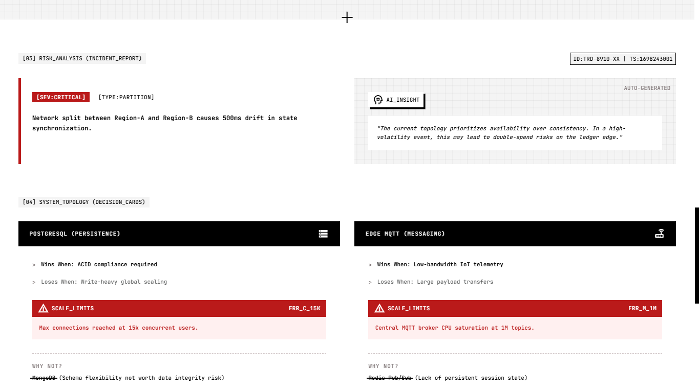
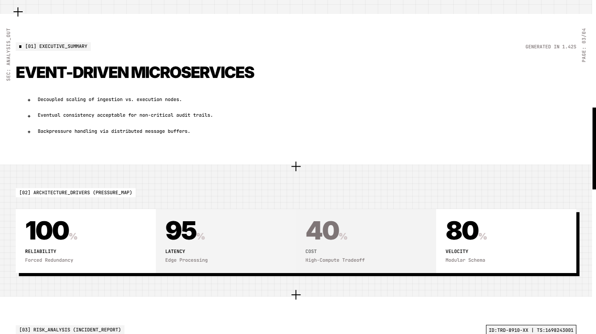
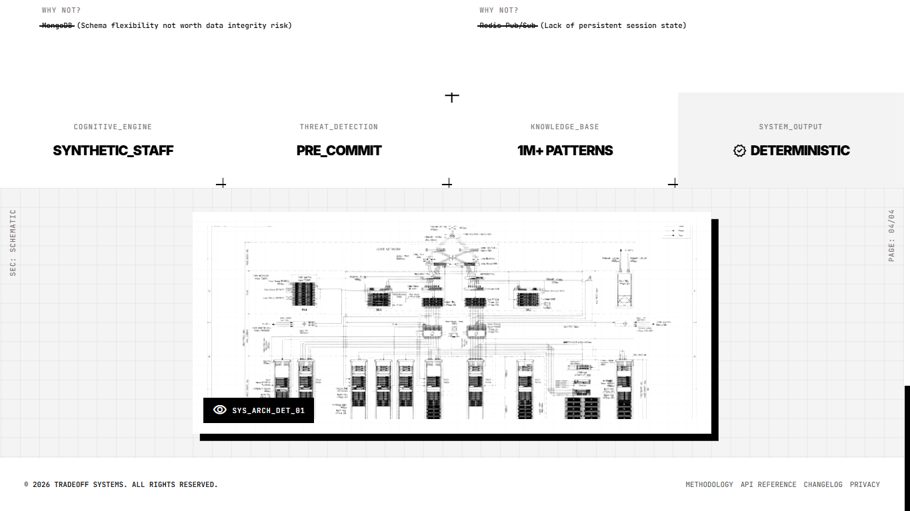

Tradeoff
An AI engineering decision engine that reviews a product brief and returns a defensible architecture—stack, tradeoffs, scale limits and existential risks—before you write a line of code. I’m the founder and architect.




Context
A bad architecture call made early costs companies six figures to unwind later. Most early teams can’t afford a staff engineer to review their plan before they commit—so they build on a hunch and pay for it in rewrites. Tradeoff removes that risk by making engineering judgment available on demand.
What I built
An engineering decision intelligence engine. It turns a short product brief into a deterministic architecture graph that evaluates competing constraints—scale, cost, reliability, velocity—and generates a highly-defensible tech stack, capability requirements, and an existential risk analysis. The reasoning is grounded in a large knowledge base of architecture patterns rather than LLM guesswork.
Why this approach
LLMs are wrong just often enough to be dangerous for architecture decisions. By keeping the reasoning engine deterministic and verifiable, and using the language model only to explain the analysis, Tradeoff gets the rigor of an engine with the clarity of an expert review—no hallucination on the facts that matter.
Role & scope
Founder and architect across the whole product: the constraint model, the pattern knowledge base, the deterministic graph engine, the review interface, and the layer that turns the analysis into plain language a founder can act on.
Result
A structured review in seconds—executive summary, pressure map, risk incident reports, decision cards comparing tradeoffs, and scale limits—that a founder can bring to the table before writing a single line of code.